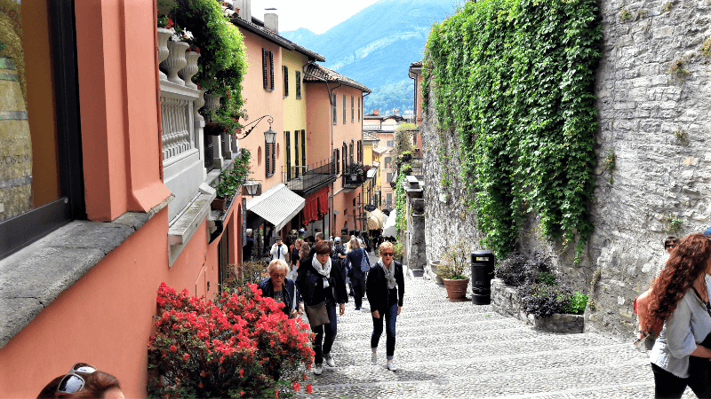
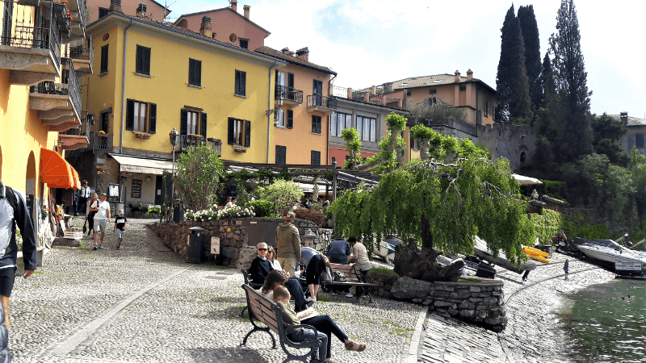

Bellagio. Nada mas llegar nos encontramos con una postal que me recuerda mucho a Cinque Terre. La localidad es famosa por su empinado centro histórico, sus callejuelas que tienen como fondo el lago, su paseo marítimo. La ciudad tiene ese ambiente único y encantador que la llevó a ser el pueblo elegido desde los siglos XVIII y XIX por las familias más pudientes de Italia para veranear. Incluso hoy, sigue siendo elegido como lugar de veraneo por ricos y famosos.

Varenna, es considerado uno de los destinos más turísticos del Lago di Como. Es un pequeño pueblo de pescadores que al día de hoy aún conserva ese increíble encanto que lo hace un lugar único y perfecto para cualquiera que quiera perderse por sus callecitas, disfrutar de unos momentos de descanso, o contemplar uno de los paisajes más increíbles del Lago di Como. Por sus calles empedradas te sorprenderán las casas y arcos recubiertos de hiedra.